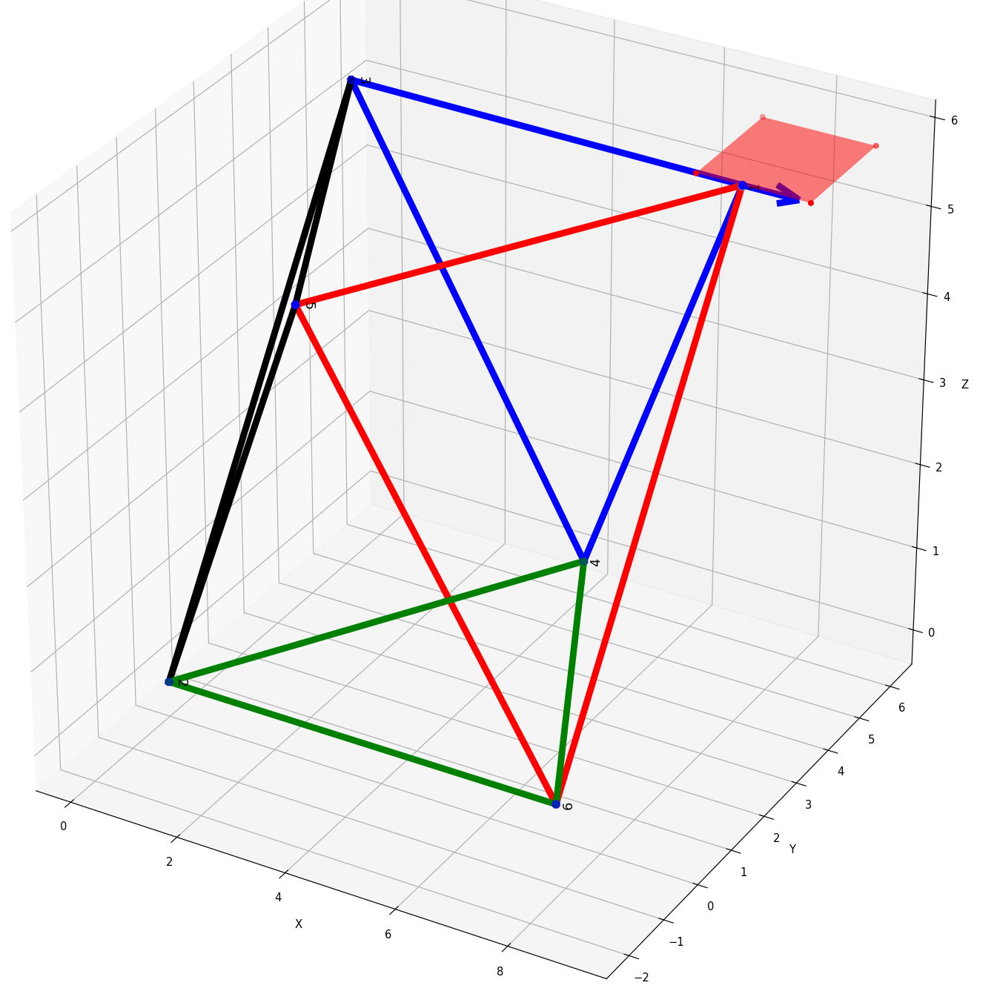
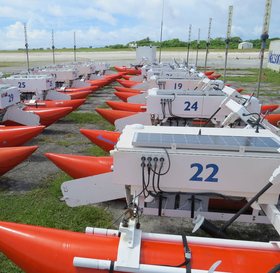
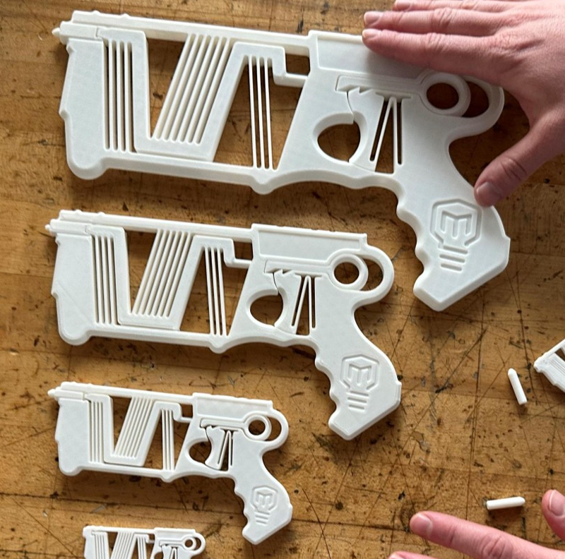
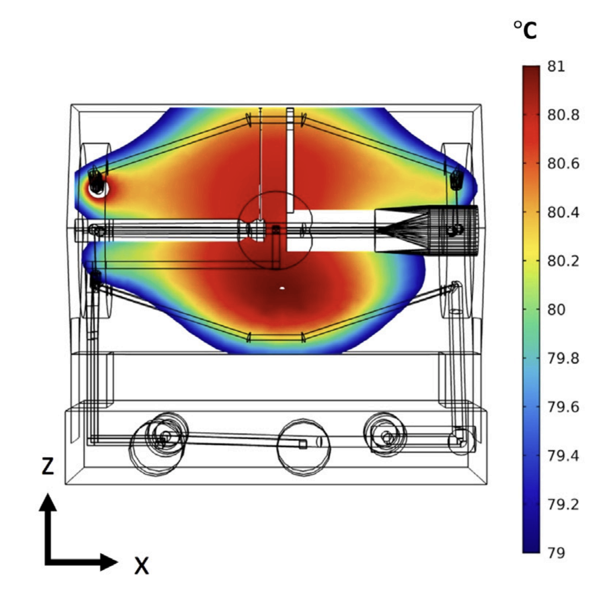

For publications, presentations, and proposals, visit the Publications Page
Current Research
Active research projects in autonomous systems, multi-agent coordination, and robotic resilience.

AutonomyNM | Sandia National Laboratories
Duration: May 2025 – Present | Role: Undergraduate Research Intern
Led development of RAM-Stack, an integrated ROS 2 software architecture for coordinated autonomous multi-agent systems in GPS-denied environments.
- System Integration: Unified SLAM Toolbox, SwarmSLAM, Navigation2, and ROS 2 Control into a cohesive autonomy stack
- Performance Optimization: Mastered behavior tree debugging for Navigation2 and implemented Zenoh-based interface filtering to improve multi-agent scalability and reduce communication overhead
- Tools & Technologies: ROS 2 (Humble), Python, C++, Gazebo, SLAM Toolbox, Nav2, Zenoh DDS
- Outcome: Poster presentation to Sandia technical leadership in August 2025 and a recorded three-hour technical presentation for future users of the RAM-Stack

Compliant Mechanisms and Robotics Group (CMR) | Brigham Young University
Duration: May 2025 – Present | Role: Undergraduate Researcher | Funding: Utah NASA Space Grant ($2,000)
Developing fault-tolerant algorithms to maximize workspace and maintain locomotion in multiply-redundant truss robots experiencing actuator failures.
- Algorithm Development: Creating optimization routines to reconfigure robot geometry and maintain maximum reachable workspace under failure conditions
- Validation: Simulating multiple failure scenarios and validating continued locomotion in both simulation and hardware platforms
- Tools & Technologies: Python, discrete-time CBFs, kinematic modeling, embedded control systems
- Outcome: Conference presentation scheduled for April 2026 at Utah NASA Space Grant Symposium. First-author paper in preparation for submission to IEEE Robotics and Automation Letters

Multi-Agent Intelligent Coordination and Control (MAGICC) Lab | Brigham Young University
Duration: August 2024 – Present | Role: Undergraduate Researcher
Investigating real-time Control Barrier Function (CBF) formulations for safe multi-agent navigation using LiDAR-based environmental perception.
- Novel Approach: Formulating CBFs directly from LiDAR point clouds for dynamic obstacle avoidance without pre-mapping
- Simulation & Hardware: Validating multi-agent coordination algorithms in Gazebo simulation and deploying on physical robot platforms
- Tools & Technologies: ROS 2, Python, C++, Gazebo, LiDAR sensor processing, control theory
Past Research
Completed research projects demonstrating expertise in soft robotics, embedded systems, and microfluidics.

Compliant Mechanisms and Robotics Group (CMR) | Brigham Young University
Duration: August 2023 – May 2025 | Role: Lead Undergraduate Researcher | Team: 25+ students | Funding: NASA BIG Idea Challenge ($147,000)
Led development of an untethered, modular inflatable truss robot for lunar surface operations as part of NASA's Breakthrough, Innovative, and Game-changing (BIG) Idea Challenge.
- Team Leadership: Established research operations for a new lab, coordinating 25+ undergraduate researchers across mechanical, electrical, and software teams. Led grant writing and management efforts at a time with few to no graduate students
- System Design: Led complete redesign of soft, inflatable octahedral robot incorporating novel parent-child radio networking with error-checking protocols
- Achievement: Selected as 1 of 6 national finalists in the 2023-2024 NASA BIG Idea Challenge. Presented technical paper and poster at the BIG Idea Challenge symposium and the November 2025 Lunar Surface Innovation Consortium (LSIC) meeting
- Publications: In preparation for resubmission to IEEE Transactions on Mechatronics
- Tools & Technologies: SolidWorks, Arduino, embedded control, RF communications, inflatable actuator design

LLNL Independent Diagnostic Scoring System (LIDSS) | Lawrence Livermore National Laboratory
Duration: May 2024 - May 2025 | Role: Undergraduate Research Intern
Engineered embedded control system for autonomous fleet of diagnostic rafts used in nuclear weapons testing applications.
- Full-Stack Development: Delivered end-to-end mechanical, electrical, and software systems for fleet command and control
- Real-Time Systems: Programmed STM32 microcontrollers with FreeRTOS, implementing task scheduling and inter-raft communication protocols
- Tools & Technologies: STM32, FreeRTOS, C/C++, RF communication, embedded systems design

Mark Rober Collaboration & CMR | Brigham Young University
Duration: June 2023 – August 2023 | Role: Undergraduate Researcher | Impact: 72M+ YouTube views
Collaborated with YouTuber Mark Rober to engineer the world's smallest functional Nerf guns across five different scales, featured in a viral video with 72M+ views.
- Iterative Design: Conducted 100+ design iterations and failure mode analysis to optimize mechanical performance at micro-scale
- Technical Communication: Provided weekly technical reports documenting design decisions, test results, and optimization strategies
- Tools & Technologies: SolidWorks, 3D printing, mechanical testing

Thermal and Energy Management Processes (TEMP) Lab | Brigham Young University
Duration: March 2023 – August 2023 | Role: Undergraduate Researcher
Investigated quantum dots as novel temperature sensors for 3D-printed microfluidic "lab-on-a-chip" devices, enabling non-invasive thermal measurements.
- Experimental Design: Calibrated quantum dot fluorescence output to temperature in custom microfluidic channels
- Device Fabrication: Designed and fabricated 3D-printed microfluidic test devices for temperature measurement validation
- Publication: Co-author on paper published in International Journal of Heat and Mass Transfer (2025)
- Tools & Technologies: 3D printing, fluorescence microscopy, microfluidics, thermal analysis